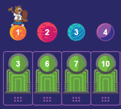

<!DOCTYPE html>
<html dir="rtl" align="right"></html>
<html>
<head>
   <meta charset="utf-8">
   <title>2022-FR-10_index_cards</title>
   <script>
      window.stringsLanguage = 'ar';
   </script>
   <script class="remove" type="text/javascript" src="../../../_common/modules/pemFioi/importModules-1.1_M.js" id="import-modules"></script>
   <script class="remove" type="text/javascript">
      var modulesPath = '../../../_common/modules';
      importModules([
         'jquery-1.7.1', 'jquery-ui.touch-punch', 'raphael-2.2.1', 'JSON-js', 'grid-1.1',
         'beav-1.0', 'beaver-task-2.0', 'simulation-2.0', 'raphaelFactory-1.0',
         'delayFactory-1.0', 'simulationFactory-1.0', 'button-1.0',
         'platform-pr', 'installationAPI.01', 'miniPlatform',
         'randomGenerator-1.0', 'shape-paths-1.1', 'drag_lib-2.1', 'responsiveDOMConverter','fonts-loader-1.0', 'loader-buttonsAndMessages' 
      ]);
   </script>
   <script type="text/javascript">
      var respEnabled = Beav.Navigator.supportsResponsive();
      // var respEnabled = false;
      if(respEnabled){
         importModules(['buttonsAndMessages_resp','taskStyles-0.3_M']);
         window.FontsLoader.loadFonts(['fontawesome']);
         task.getMetaData = function(cb) { cb({nbHints: 0, autoHeight: true}); }
      }else{
         importModules(['buttonsAndMessages','taskStyles-0.1']);
      }
   </script>
    
   <script class="remove" type="text/javascript">
    var json = {
       "id": "http://castor-informatique.fr/tasks/2016/2016-FR-01-not-rectangles/",
       "language": "en",
       "version": "en.01",
       "authors": "Idea: Mathias Hiron; Design: Arthur Charguéraud, Mathias Hiron; Implementation: Arnaud Le Grand",
       "translators": [],
       "license": "CC BY-SA 3.0",
       "taskPathPrefix": "",
       "modulesPathPrefix": "",
       "browserSupport": [],
       "fullFeedback": true,
       "acceptedAnswers": [],
       "usesRandomSeed": false
   };
   </script>
   <script type="text/javascript">
   var taskStrings = {
         introTitle: "المهمة المطلوبة",
         success: "تهانينا، لقد نجحت!",
         undo: "تراجع",
         try: "جرب",
         clickRetry: "اضغط على ابدأ من جديد للمحاولة مرة أخرى",
         swapTeleporters: "قم بتبديل بعض\nالنواقل الآنية",
         nbSwap: function(val,max) {
            return "عدد التبديلات: "+val+" / "+max
         },
         nbStep: function(val,max) {
            return "عدد الخطوات: "+val+" / "+max
         },
         dragLabel: "لمساعدتك على التفكير، يمكنك تحريك الكواكب حول المنطقة أدناه:",
         errorMaxSwap: function(max) {
            var pl = (max > 1) ? "s" : "";
            return " لا يسمح لك بعمل أكثر من عدد  "+max+" من التبديلات"+pl
         },
         errorDst: "لم تصل لوجهتك المطلوبة.",
         errorLoop: " الناقل الآني أعاد القندس للكوكب الأصلي الذي انطلق منه !",
         errorTooManySwaps: " لقد وصلتك لوجهتك المطلوبة، لكن كان بالإمكان تحقيق ذلك بعدد أقل من التبديلات.",
         errorTeleporter: "  الناقل الآني أرسل القندس للكوكب المتواجد به حالياً تحتاج لاستخدام ناقل آخر يوصله لكوكب آخر مختلف."
      };
      var enableRtl = true;
	  var threeVersions = true;
   </script>
   <script type="text/javascript" src="task.js"></script>
   <style>
      #paper *:not(.overlay) {
         touch-action:  none;
      }
      #error {
         margin-top: 1em;
         min-height: 2em;
         line-height: 2em;
         text-align: center;
      }
      #displayHelper_graderMessage {
         color: red;
         font-weight: bold;
      }
   </style>
</head>
<body>
   <div id="task">
      <h1>النقل الآني</h1>
      <div id="tabsContainer"></div>
      <div id="taskContent">
         <div id="zone_1">
            <p> يريد القندس أن يسافر للكوكب المحاط بحلقة.</p>
            <p> عند الضغط على "جرب" سيتم نقل القندس للكوكب الذي كتب رقمه على الناقل الآني الخاص به.</p>
            <p class="medium hard">هو يقوم بهذا بعدد <strong><span class="medium">4</span><!--<span class="medium">7</span>--><span class="hard">11</span> مرات</strong> تحديداً.</p></p>
            <p>قم بتبديل موقع <span class="easy medium">اثنين من النواقل الآنية</span><span class="hard"><strong>زوجين من النواقل الآنية</strong></span>، كي يتوقف القندس عند الكوكب المحاط بحلقة .</p>
         </div>
         <div id="zone_2">
            <div id="error"></div>
            <div id="paper"></div>
         </div>
         
         
         
         
         
         
      </div>
   </div><!-- task -->
   <div id="solution">
      <h2>الحل/h2>

      <h2>إنه علم الحاسوب !</h2>

  </div> <!-- task-solution -->
</body>
</html>
